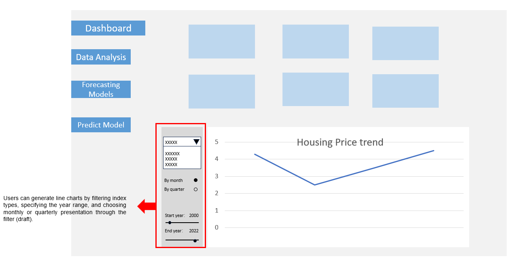
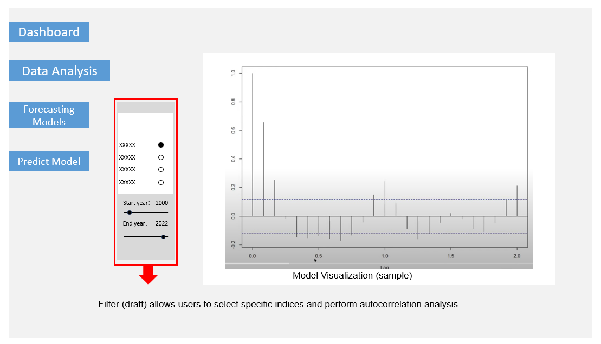
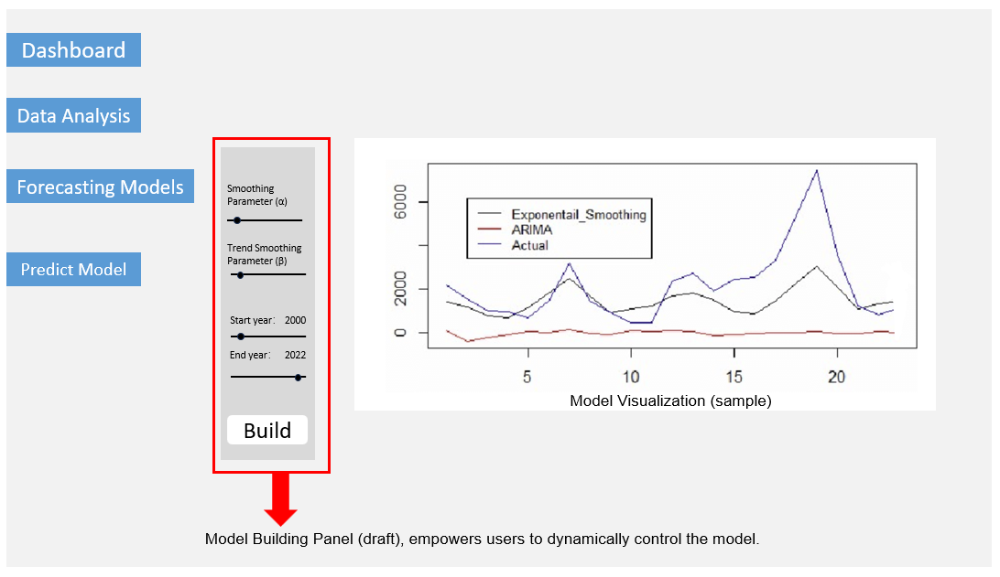
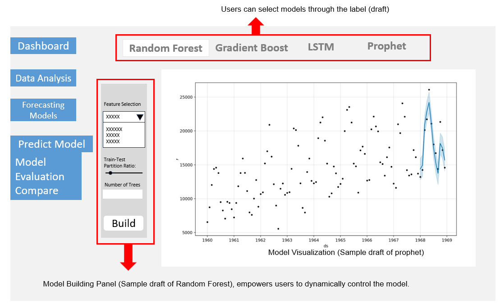
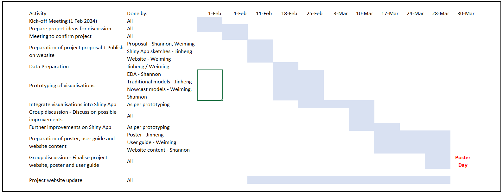

Is NOW the time to BUY?
Project Proposal on Visual Nowcasting for Property Price Index
Housing Price Index “NOWCASTED”
Motivation
Singapore’s housing market distinguishes itself by operating under a dual-market structure that includes a public segment developed by the Housing Development Board (HDB), subject to strict government rules and regulations, and a private segment where market dynamics exclusively dictate prices. Government-regulated HDB flats, which constitute approximately 73% of residential units, accommodate 80% of Singapore’s populace, according to The Economist (2017). The government sets the prices for new HDB apartments, offering them to citizens at subsidized rates. While the resale prices of HDB apartments are not directly managed, they are significantly shaped by governmental policies, which are periodically modified in response to the country’s macroeconomic challenges (Chan et al., 2012). Despite the smaller scale of the private property sector, our analysis focuses on this segment due to its dynamics being less influenced by governmental control and more by market forces. Our study focuses on accurately and promptly predicting changes in private housing prices, a critical tool for homebuyers, sellers, investors, and policymakers.
 Problem
Problem
Forecasting Singapore’s private housing index is beset with difficulties, arising from the complex interplay among several factors such as economic indicators, employment trends, policy changes, and current market sentiments. The intricacy is further intensified by the delayed nature of crucial indices and indicators, which are commonly released with a substantial time delay, usually spanning from one to three months. These delays impede the capacity to accurately predict private house price changes, as the most up-to-date data required for precise forecasts is not easily accessible.
To tackle this problem, it is necessary to utlilise nowcasting models that can precisely forecast the future direction of the Singapore private housing market. The objective is to utilize these models to provide stakeholders, including homebuyers, sellers, investors, and policy makers, with timely and convenient access to predictive data via visual analytics.
Current Literature
Taniyama (2013) pioneers the use of real-time data, such as news articles and internet search queries, to forecast real estate market trends. By quantifying market sentiment and public interest obtained from these digital sources, the study presents an innovative approach for analyzing the present state of the housing market, demonstrating that immediate digital footprints might be effective indicators of market dynamics..
Housing Price Prediction Using Neural Networks (2014) research employs artificial neural network (ANN) models to predict public housing prices in Singapore. The study is divided into two sections: the first uses static ANN to estimate selling prices based on housing characteristics, and the second uses dynamic ANN to predict the trend of the resale price index, incorporating nine independent economic and demographic variables.
Housing Price Prediction Using Deep Learning (2022) advances the field by comparing deep learning methods against traditional machine learning algorithms for forecasting the housing resale price index in Singapore. By integrating both historical housing data and macroeconomic indicators, this research evaluates the effectiveness of various models, including Long Short-Term Memory (LSTM), Recurrent Neural Network (RNN), and others, in capturing the complex patterns of price movements, thereby offering a more nuanced understanding of predictive performance in the housing market.
Our Solution
Leveraging a variety of R packages and visual analytics techniques, our team intends to construct nowcasting models through an intuitive R Shiny application. This tool is designed to empower stakeholders, providing them with enhanced capabilities to form more informed decisions regarding the future of Singapore’s private housing market.
The application developed by our team will enable users to:
- Conduct visual analyses of critical time series data, including the housing price index, interest rates, construction raw material prices, and stock market indices, facilitating straightforward comparisons across these varying series.
- Grasp the implications of fluctuating factors such as interest rates, stock market indices, and costs of raw materials—variables that shift within the period of calculating the housing price index—and understand their predictive value for the future direction of housing prices.
- Develop and display nowcasting models specifically tailored for the housing price index, assessing their precision using established evaluation metrics like the Mean Squared Error (MSE) or the Root Mean Squared Error (RMSE).
Datasets
This study will utilize datasets obtained from official government portals, encompassing a range of economic indicators:
- Singapore Private Residential Property Price Index: A quarterly index tracking changes from March 1975 to June 2023.
- Singapore Domestic Interest Rates: The daily SORA Index data spanning from January 1987 to January 2024.
- Straits Times Index (STI): Daily STI values from April 1985 to January 2024, reflecting stock market trends.
- Prices of Raw Materials: Monthly indices for cement, steel bars, granite, concreting sand, and ready-mixed concrete, providing insight into construction cost dynamics.
- Unemployment Rate: Quarterly data on the percentage of unemployed individuals from March 1992 to December 2023, offering a measure of labor market health.
Methodology and Visual Analytics Approach
Exploratory and Comparative Data Analysis (EDA & CDA)
- Time series visualizations for a range of indices.
- Features enabling users to compare time series of indices within chosen time frames.
- Visual representation of statistical summaries for various indices and economic indicators.
Model Development and Visualization
- Deployment of an R Shiny application to facilitate nowcasting with multiple model types for private housing price indices, for instance:
- Traditional Forecasting Models: Exponential Smoothing, ARIMA.
- Machine Learning Models: Random Forest, Gradient Boost, Long Short-Term Memory and Prophet.
- Model evaluation using standard metrics like Mean Squared Error (MSE) and Root Mean Squared Error (RMSE), with intuitive visualizations for user-friendly assessment.
- Interactive features for parameter adjustment to aid users in finding optimized model settings.
- Provision for model comparison functions, contingent on time availability.
Dashboard
The R Shiny app will feature an interactive dashboard that streamlines the exploration of housing index trends, model forecasts, and essential metrics. This user-centred platform is designed for seamless interaction, ensuring that users can easily access and interpret complex data visualizations.
Schematics of the dashboard are provided below:




Project Gantt Chart

Annex: R Shiny Packages
The list of R Shiny packages (non-exhaustive) are expected to be used in this project:
- shiny: The core package for building interactive web applications in R.
- shinydashboard: Provides a framework for creating dashboards with Shiny, allowing you to organize and layout UI elements efficiently.
- ggplot2: For creating elegant and customizable visualizations using the Grammar of Graphics.
- plotly: Adds interactive and dynamic plots to your Shiny app, enabling users to zoom, pan, and hover over data points for additional information.
- dplyr: For data manipulation tasks such as filtering, summarizing, and transforming data frames.
- tidyr: Helps with data tidying tasks such as reshaping data between wide and long formats.
- DT: Enables the integration of interactive and dynamic data tables into your Shiny app, allowing users to sort, filter, and paginate through large datasets.
- forecast: Provides functions for time series forecasting, including methods like ARIMA, exponential smoothing, and dynamic regression models.
- xts: Extensible Time Series (xts) objects facilitate handling time series data, which is essential for modeling and forecasting the housing price index over time.
- tidyquant: Combines the power of tidyverse and quantmod packages, providing seamless integration of financial data analysis and visualization into your Shiny app.
- shinythemes: Offers a variety of pre-built themes and styling options to customize the appearance of your Shiny app.
- shinyWidgets: Provides additional input widgets and UI components to enhance the interactivity and user experience of your Shiny app.
- randomForest: Implements the Random Forest algorithm for classification and regression tasks. It provides efficient and easy-to-use functions for building, tuning, and predicting with random forest models.
- gbm: Implements the Gradient Boosting Machine (GBM) algorithm, which is a popular ensemble learning method. It allows you to build gradient boosting models for regression and classification tasks, with options for tuning parameters and controlling model complexity.
- xgboost: Provides an interface to the XGBoost library, which is an optimized implementation of gradient boosting. XGBoost offers high performance, scalability, and support for advanced features such as regularization and custom objective functions.
- keras: Offers a high-level neural networks API for building deep learning models, including LSTM networks, using TensorFlow as the backend. Keras simplifies the process of constructing and training complex neural architectures with minimal code.
- tensorflow: Provides direct access to the TensorFlow library, which includes functionality for building and training deep learning models, including LSTM networks. TensorFlow offers flexibility, scalability, and support for distributed computing.
- prophet: Provides an interface to use Google’s Prophet forecasting model.